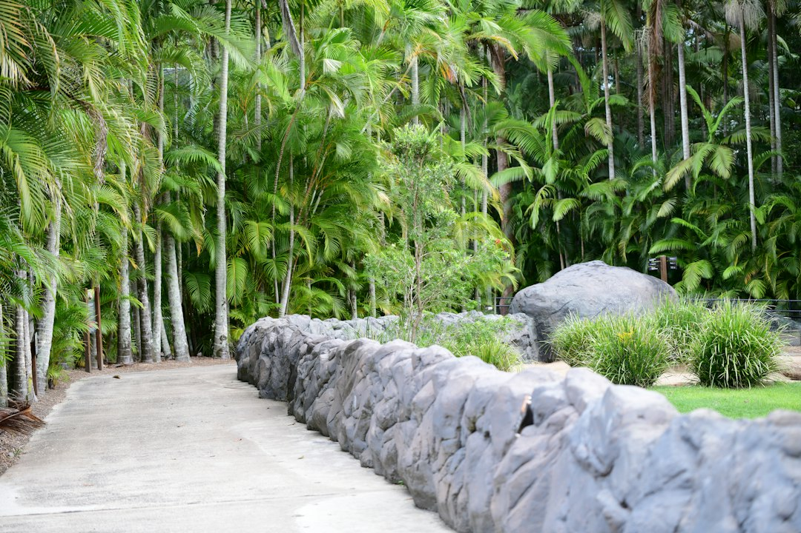

On the Sunshine Coast, retaining wall decisions start with height, length, load above the wall, ground type and drainage. The source guide prices walls by square metre of wall face, names indicative bands of about $150 to $300 per square metre for rock and boulder walls and $300 to $450 for timber sleepers, and flags approval pathways for walls over 1 metre, surcharge conditions and council concurrence for walls over 2 metres.
For homeowners comparing retaining walls sunshine coast options, the practical question is how the wall will hold the site, drain water and pass approval before quotes are collected.
Retaining Walls Sunshine Coast Explained
Retaining Wall Sunshine Coast frames wall selection around the ground first: the source page contrasts a Blackall Range wall at Maleny with canal fill at Maroochydore because the same material can behave differently across those settings. Before choosing sleepers, blocks, rock or gabions, the useful inputs are height, length, what sits above the wall, the suburb or postcode, and whether the wall is a new build, repair or replacement.
The published guide also makes drainage part of the structure, not a finishing touch. It names ag drain, aggregate and geofabric as details discussed behind every scope, and it treats poor drainage as the leading cause of wall failure. That is why a quote comparison should ask how water will be collected, relieved and kept away from the retained face, especially on wet hinterland slopes or coastal sand.
For another crawlable reference on the same topic, this related Sunshine Coast retaining wall guide can sit beside the main source when checking the project basics.
Approval Questions To Ask Before Quotes
The source page says Sunshine Coast Council requires a building permit before construction, modification or repair of most retaining walls, and council approval as a concurrence agency for walls over 2 metres. It also states that engineered and council-approved walls may involve AS 4678 design with RPEQ Form 15 and Form 16 certification.
- Ask whether the wall is over 1 metre, or whether anything above it creates surcharge.
- Ask whether the work is a repair, replacement, modification or new retaining structure.
- Ask whether the proposed wall needs engineering before a price can be relied on.
- Ask what documents the contractor expects to provide for design and inspection.
The page also notes that QBCC licensing is triggered by the value of the building work, not the height of the wall. That makes licence status a quote question rather than an assumption based only on wall size.
Material Choice Follows Load, Room And Drainage
The material list on the source page is broad, but it is not presented as a style menu. Concrete sleepers between galvanised posts are described as a common replacement option. Timber sleepers are positioned for low garden falls and terraces. Core-filled besser block is linked with taller engineered and rendered walls. Rock and boulder walls need room behind the face because they are battered back into the slope, while gabion baskets are described as suited to scour and surface runoff on erodible ground.
That gives owners a practical order for early conversations. First, define the wall face area by multiplying height by length. Then identify what is retained and what loads sit above it. After that, material choice becomes easier to discuss because each option has a different fit for access, finish, engineering and drainage.
Cost Signals Worth Separating
The source guide prices walls by square metre of wall face, not by lineal metre. Its example is a 1.2 metre high wall that is 10 metres long, which becomes 12 square metres of wall face. That distinction matters because two walls with the same length can have very different excavation, post, sleeper, drainage and engineering requirements.
Only two complete indicative bands are visible in the supplied text: about $150 to $300 per square metre for rock and boulder walls, and $300 to $450 per square metre for timber sleepers. The same page says exclusions should be named before quotes are collected, so a useful estimate should separate wall face, drainage, engineering, access and removal or replacement work where they apply.
- Provide height and length in metres, not just a photo.
- Say what sits above the wall, including a driveway, fence, structure or slope if relevant.
- Ask whether drainage, geofabric and aggregate are included in the quoted scope.
- Ask whether approval or engineering is included, excluded or still to be assessed.
Who This Applies To
This guide is most relevant to owners, buyers and renovators dealing with a fall they cannot use, a failed wall, or a boundary or garden level change on the Sunshine Coast. It is also useful where the first question has been framed too narrowly, such as asking for a bricklayer, landscaper, mason or excavator operator before the wall's structural role is clear.
For retaining walls sunshine coast projects, the stronger brief is not a long suburb list. It is a short technical summary: location, height, length, ground condition, visible cracking or bulging, drainage symptoms, and the load above the wall. Those details help separate a low garden terrace from a wall that needs engineering, permits and certification.
- Measure the wall face. Multiply height by length so quote discussions use square metres of wall face rather than length alone.
- Describe the load above. Tell the contractor what sits above the wall, because surcharge can change the approval and engineering pathway.
- Check drainage scope. Ask how ag drain, aggregate and geofabric are allowed for behind the wall.
- Clarify approval needs. Ask whether the proposal needs a building permit, council concurrence, engineering or Form 15 and Form 16 certification.
- Compare exclusions. Read each quote for named exclusions before comparing the headline wall price.
| Option | Best fit from the source guide | Main question to ask |
|---|---|---|
| Concrete sleeper | Replacement work between galvanised posts | Is the post, sleeper and drainage detail suited to the retained height? |
| Timber sleeper | Low garden falls and terraces | Is it being used only where the retained load is modest? |
| Besser block | Taller engineered walls and rendered finishes | Will design and certification be needed before construction? |
| Rock or boulder | Hinterland or acreage settings with room behind the face | Is there enough room to batter the wall back into the slope? |
| Gabion | Erodible ground, scour and surface runoff situations | How will the baskets and drainage manage moving water? |
Common questions
How are retaining wall costs usually compared on the source guide? The guide uses square metres of wall face, calculated as height multiplied by length. Its example is a 1.2 metre high wall by 10 metres long, which equals 12 square metres of face.
When does engineering enter the discussion? The source page links engineered retaining walls with AS 4678 design, RPEQ Form 15 and Form 16 certification, especially where walls are over 1 metre or carry surcharge.
Is drainage optional behind a wall? No. The source guide treats subsoil drainage as a requirement and names ag drain, aggregate and geofabric as details discussed behind every wall scope.
Should the trade title decide who is suitable? The guide says people may ask for a bricklayer, landscaper, mason or excavator operator, but the relevant issue is whether the work and licence position suit the wall.
This guide covers Sunshine Coast retaining wall cost signals, approval questions, drainage scope, material selection and quote preparation.